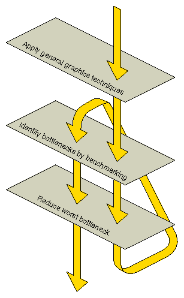

Timing, or benchmarking, parts of your program is an important part of tuning. It helps you determine which changes to your code have a noticeable effect on the speed of your application.
To achieve performance that is demonstrably close to the best the hardware can achieve, you can first follow the more general tuning tips provided here, but you then need to apply a rigorous and systematic analysis, as discussed in these section:
A detailed analysis involves examining what your program is asking the system to do and then calculating how long that should take, based on the known performance characteristics of the hardware. Compare this calculation of expected performance with the performance actually observed and continue to apply the tuning techniques until the two match more closely. At this point, you have a detailed accounting of how your program spends its time, and you are in a strong position both to tune further and to make appropriate decisions considering the speed-versus-quality trade-off.
The following parameters determine the performance of most applications:
Consider these guidelines to get accurate timing measurements:
Verify that no unusual activity is taking place on your system while you take timing measurements. Close other Windows applications; for example, don't have a clock or a network application running while you are benchmarking.
Use a high-resolution clock and make measurements over a period of time that's at least one hundred times the clock resolution. A good rule of thumb is to benchmark something that takes at least two seconds so that the uncertainty contributed by the clock reading is less than one percent of the total error. To measure something that's faster, write a loop to execute the test code repeatedly.
Note: Loops like this for timing measurements are highly recommended. Be sure to structure your program in a way that facilitates this approach.
Use QueryPerformanceCounter() or QueryPerformanceFrequency() to measure time.
Verify that the code you are timing behaves identically for each frame of a given timing trial. If the scene changes, the current bottleneck in the graphics pipeline may change, making your timing measurements meaningless. For example, if you are benchmarking the drawing of a rotating airplane, choose a single frame and draw it repeatedly, instead of letting the airplane rotate and taking the benchmark. Once a single frame has been analyzed and tuned, look at frames that stress the graphics pipeline in different ways, then analyze and tune them individually.
Run your program multiple times and try to understand variance in the trials. Variance may be due to other programs running, system activity, prior memory placement, or other factors.
This is important if you are using a machine with hardware acceleration because the graphics commands are put into a hardware queue in the graphics subsystem, to be processed as soon as the graphics pipeline is ready. The CPU can immediately do other work, including issuing more graphics commands until the queue fills up.
When benchmarking a piece of graphics code, you must include in your measurements the time it takes to process all the work left in the queue after the last graphics call. Call glFinish() at the end of your timing trial, just before sampling the clock. Also call glFinish() before sampling the clock and starting the trial, to ensure no graphics calls remain in the graphics queue ahead of the process you are timing.
To benchmark performance for a particular code fragment, follow these steps:
To determine the number of pixels filled, start by making a visual estimate. Be sure to include surfaces that are hidden behind other surfaces, and notice whether or not backface elimination is enabled. For greater accuracy, use feedback mode and calculate the actual number of pixels filled.
Refer to the product literature for the target system to determine some transform and fill rates. Determine others by writing and running small benchmarks.
To determine time spent executing instructions in the application, perform the graphics-stubbing experiment described in "Finding Bottlenecks in Your Application".
This process takes some effort to complete. In practice, it's best to make a quick start by making some assumptions, then refine your understanding as you tune and experiment. Ultimately, you need to experiment with different rendering techniques and perform repeated benchmarks, especially when the unexpected happens.
Verify some of the suggestions presented in the following chapter. Try some techniques on a small program that you understand and use benchmarks to observe the effects. Figure 4-1 shows how you may actually go through the process of benchmarking and reducing bottlenecks several times.

Figure 4-1 : Flowchart of the Tuning Process